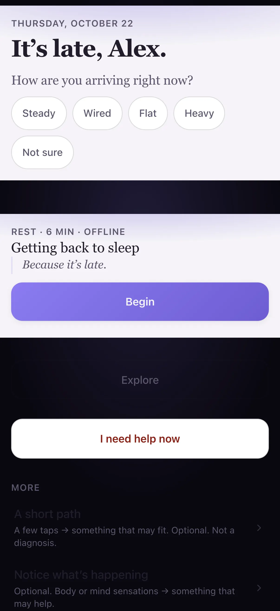

Illustrative story Illustrative story. People and data are fictional.
SoulCap · Lahore, Pakistan
How Zainab starts work without borrowing tomorrow’s worry
Zainab teaches mornings. Phone for a physiological sigh, laptop for a longer journal on Fridays, tablet when she wants a calmer landscape view.
“Two minutes. Then the day can start.”

Before and after
Illustrative numbers from a fictional week.
Before
After SoulCap
A day with Zainab
-
Breath first
Before email, Zainab runs a physiological sigh on her iPhone — two minutes in the dark hallway outside the classroom, feet on the floor, then the day can start.
-
Feeling check
Same phone: she taps how she feels without writing an essay — a check-in that takes less time than scrolling the news.
-
Tablet calm
At lunch the shared iPad opens Calm tools; landscape view, no autoplay noise, just a reset before afternoon classes.
-
Friday laptop journal
Friday night she writes a longer journal on the laptop — still private, still on-device — naming the week without turning it into content.
-
Close kindly
Phone shows crisis info is reachable if she ever needs it. Tonight she does not. She locks the screen kindly.
Watch it
A day across devices — silent walkthrough with captions. No autoplay with sound.
Read transcript
Zainab breathes and checks in on phone, uses Calm on tablet, journals on laptop. Crisis copy unchanged. Fictional.
Features Zainab uses
Illustrative story. People and data are fictional.